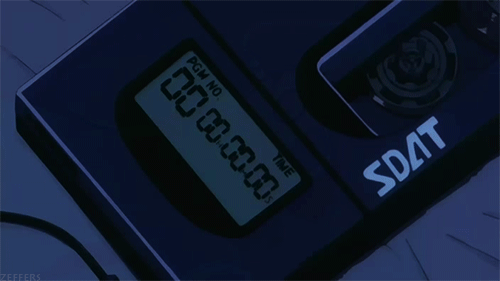

O bem que fazem novas músicas
Postado em 07/05/2021
Um novo estudo, conduzido por um grupo de cientistas canadenses, descobriu que ouvir novas músicas faz bem ao cérebro. Os pesquisadores escanearam a atividade cerebral de 19 voluntários, que ouviram 60 músicas desconhecidas por eles, o resultado mostrou que os sons ativam no cérebro a área responsável pelo sistema de recompensas. Conheça algumas bandas brasileiras agora!
Leia maisSinta novas emoções (literalmente!)
Postado em 07/05/2021 Segundo o artigo, publicado no periódico científico PNAS, as músicas causam ao menos 13 emoções diferentes nas pessoas. “Imagine organizar uma biblioteca de música massivamente eclética por emoção e capturar a combinação de sentimentos associados a cada faixa. Isso é essencialmente o que nosso estudo fez", disse Alan Cowen, um dos autores da pesquisa, em comunicado. Synthwave talvez seja uma boa ideia de sentir algumas dessas emoções!
Leia mais